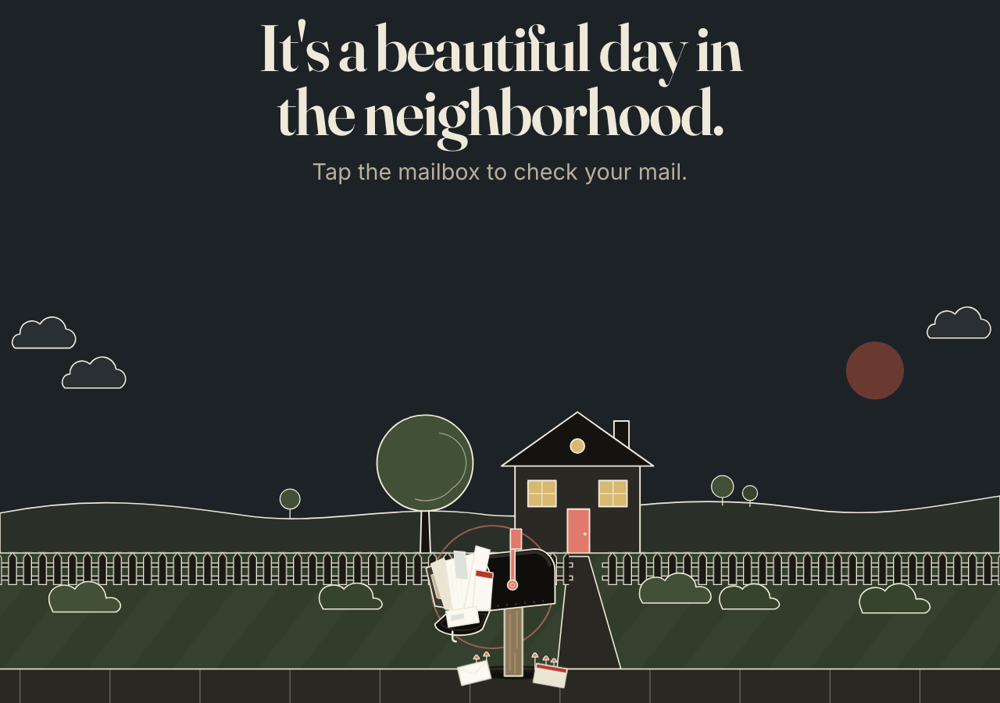

View the live piece ↗The Mailbox Economy
A scroll-driven essay on U.S. junk mail: what it would be worth as its own economy, who sends it, and what it costs. Physics-based mail piles, an interactive sender treemap, and a closing shred-it mini-game.